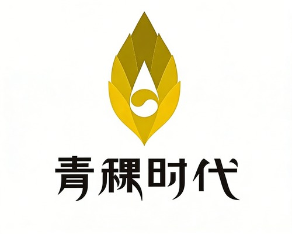

想更好地与孩子相处
从认识彼此的感受开始，了解亲子沟通相关的课程与服务。

陪伴家庭青稞时代 · 家庭教育与成长陪伴
养育路上的困惑，可以一起梳理。
在青稞，通过课程学习、咨询与线下交流，
找到适合你们家的下一步。
初次来访？你可以先浏览内容，慢慢了解我们。
先了解我们，再选择适合自己的学习与支持方式。
START WITH WHAT MATTERS TO YOU
从认识彼此的感受开始，了解亲子沟通相关的课程与服务。
给自己一点学习与交流的空间，在持续理解中探索新的回应。
了解咨询师的背景、服务方向和费用，再考虑适合自己的安排。
WAYS WE CAN SUPPORT YOU
从线上课程到线下相遇，让每个家庭都能从适合自己的地方开始。
TAKE A FIRST LOOK
看看课程如何展开，找到你感兴趣的学习方向。
ABOUT QINGKE
青稞提供家庭教育相关的学习内容与服务。现有小程序包含新人入门、系统学习、深度蜕变等学习入口，以及咨询预约和线下服务。
网站目前为设计预览。正式品牌介绍、师资资料、产品价格与活动排期将在核实后呈现。
COURSE PREVIEW
课程试看演示页 · 示例内容，未接入真实视频
这里将展示课程试看视频
当前用页面演示替代视频，点击右侧章节可查看内容介绍。示例：从家庭日常对话出发，梳理家长希望解决的沟通问题。
讲师、实际课时与正式课程介绍待核实后录入。
YOUR FAMILY LEARNING SPACE
从一节课、一次练习开始，把学到的带回日常生活。
系统学习 / 亲子沟通
第 3 节 · 从回应情绪开始
LEARN AT YOUR OWN PACE
COURSE LIBRARY
沿用小程序的学习阶段与内容类型，以下内容为设计示例。
QINGKE PRODUCTS & SERVICES
从线上学习到线下相遇，找到适合家庭当下需要的产品与服务。
产品展示原型：下列名称与介绍为示例，实际产品、价格和服务规则待核对小程序后录入。
QINGKE CONSULTATION
了解咨询师的背景与擅长方向，查看收费，再选择适合你的咨询安排。
查看介绍、擅长方向和服务方式。
明确单次时长、收费单位及会员价格。
查看可约时段，再核对预约信息。
MEET & GROW TOGETHER
看看近期的线下沙龙，为交流与学习留一点时间。
MAKE TIME FOR GROWTH
预约流程演示。真实老师、排期和会员课时规则将在确认后接入。
选择左侧的服务和时段，查看预约确认页的展示效果。
演示不会扣除课时、发出通知或创建真实预约。
QINGKE LEARNING COMPANION
以下为固定回复演示，未接入真实 AI，也不会保存对话。
MY LEARNING
会员账号与权益尚未接入。这里展示个人中心的布局方向。
OFFLINE SALON
与老师和同行的家长相聚，把学习带进生活。
线上学习与线下陪伴，在这里找到适合你的选择。